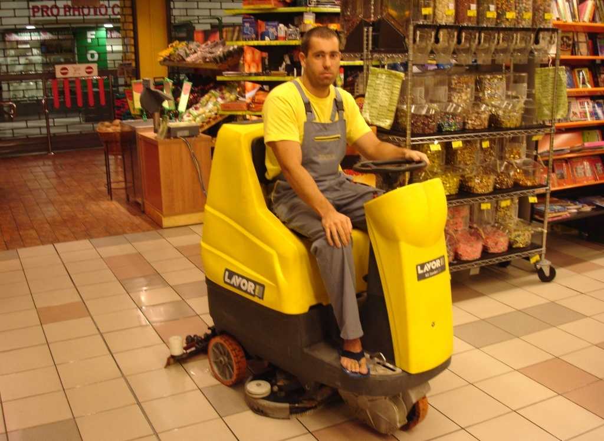
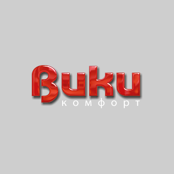

Ранни години

Вики Комфорт 2004 ЕООД е един от лидерите на пазара в България за професионално почистване. Към днешна дата фирма Вики Комфорт 2004 ЕООД има офиси във Варна, София, Пловдив, Бургас, Русе, Стара Загора, Плевен и Благоевград, като има договори и обслужва над 900 обекта на територията на цялата страна с обща квадратура над 1 700 000 кв.м.
Развитие на фирмата

Фирмата разполага с над 1300 души - професионално подготвен екип, пълна гама от почистващи машини и превозни средства. Имаме въведени системи за управление на качеството ISO 9001:2008, за безопасни условия на труд OHSAS 18001:2007 и сертификат за опазване на околната среда ISO 14001:2004. Това ни дава възможност да покриваме критериите на всички наши клиенти на цялата територия на страната.
ET Вики 92

ЕТ Вики 92 - Лъчезар Петров с управител Лъчезар Тодоров Петров и със седалище гр.Варна, е създадена през 1992г. През 2004г. фирмата се преобразува във Вики Комфорт 2004 ЕООД. С над 20 годишен опит фирмата е обслужвала стотици клиенти на територията на цялата страна.